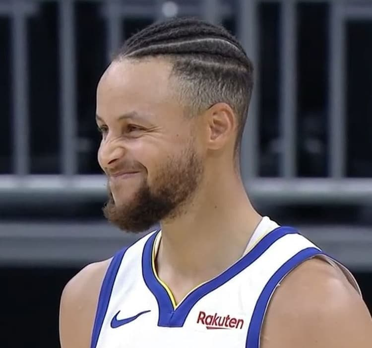
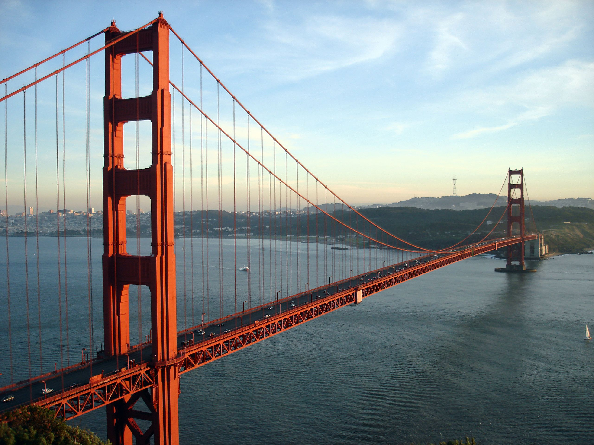
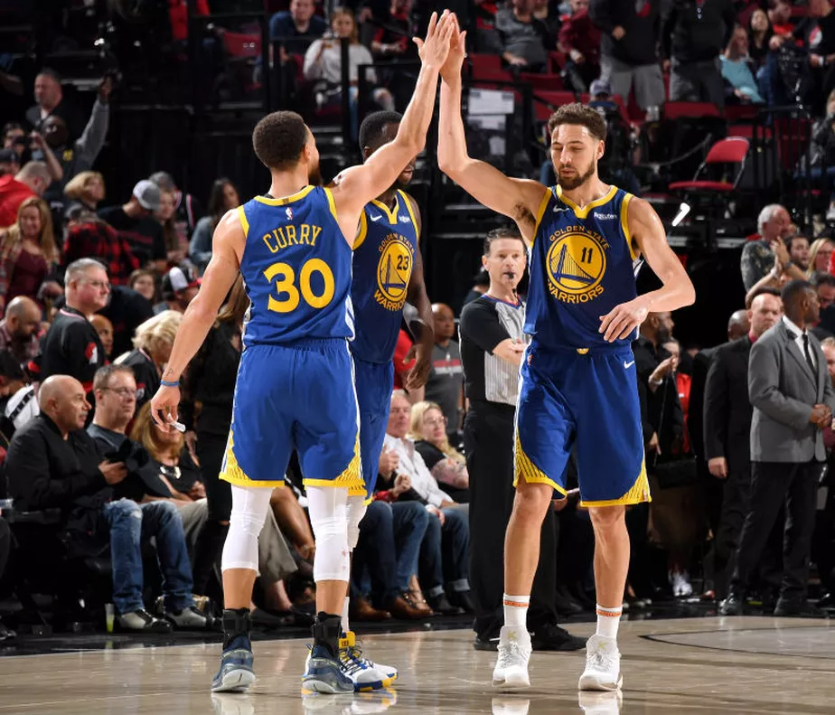
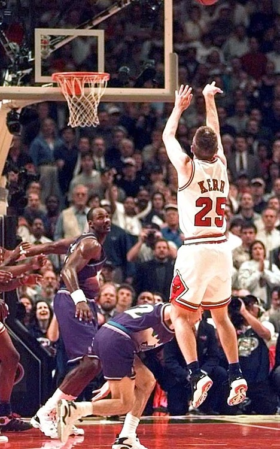

1- Possui o melhor arremessador da liga...
Stephen Curry revolucionou o jogo com os arremeços de longa distância

2- Franquia sediada em São Francisco (california)...
A cidade maravilhosa é berço de dois incriveis pontos turisticos dos EUA, a "Golden State Brigde" e a prizão de Alcatraz

3- Os SplashBrothers...
A dupla de shooters(arremessadores) Curry e Klay thompson forma responsaveis pelos 3 titulos da
franquia, com um estilo de jogo com alto volume de arremessos. Além de esbanjarem carisma e simpatia.

4- Nosso técnico (Steave Kerr) salvou Michel Jordan em uma final de NBA...
Durante o jogo 6 das finais de 1997, com a queda de desempenho de Michael Jordan após voltar da aposentadoria, com o jogo empatado
Steve Kerr fez o arremeço da vitória e garantiu o triunfo do Chicago Bulls.
